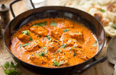

Lasagna

Description
Chicken Tikka Masala is a beloved British Indian curry dish, rich and creamy with a subtle heat. It's thought to have originated in Glasgow, Scotland, and has since become a global favorite. The tender, marinated chicken is cooked in a fragrant tomato-based sauce, infused with warm spices like cumin, coriander, and garam masala. The result is a dish that is both comforting and complex, perfect for sharing with friends and family.
Ingredients
- Chicken breasts, boneless and skinless
- Greek yogurt
- Lemon juice
- Ginger and garlic paste
- Turmeric, cumin, coriander, garam masala
- Paprika, cayenne pepper
- Salt and pepper
- Onion
- Tomato puree
- Heavy cream
- Butter
- Fresh cilantro
Steps
- Marinate chicken in yogurt, lemon juice, ginger-garlic paste, and spices.
- Grill or bake chicken until cooked through.
- Sauté onions until golden brown.
- Add tomato puree, spices, and cook for a few minutes.
- Blend the sauce for a smoother texture (optional).
- Add heavy cream, butter, and cooked chicken to the sauce.
- Simmer until the sauce thickens.
- Garnish with fresh cilantro.